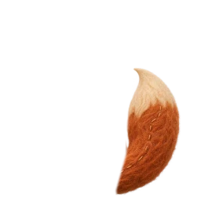
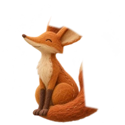
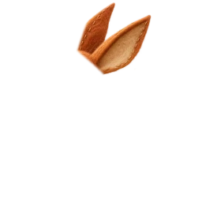
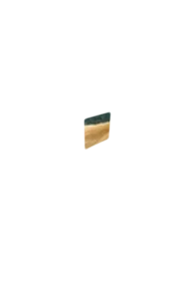
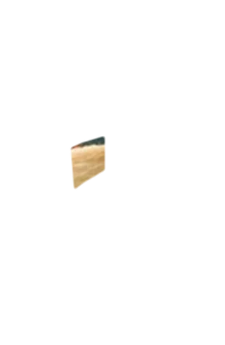
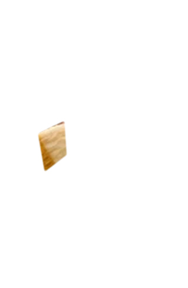
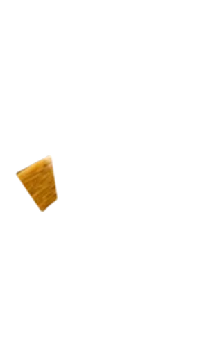

Коснитесь Принца или кнопки «Подключить».
При получении профилей передаются ID установки, модель устройства и версия приложения.
Подключитесь через сервер в новом городе — Принц поставит штамп.
Герой стоит на выбранном городе и прыгает с вами по маршруту.